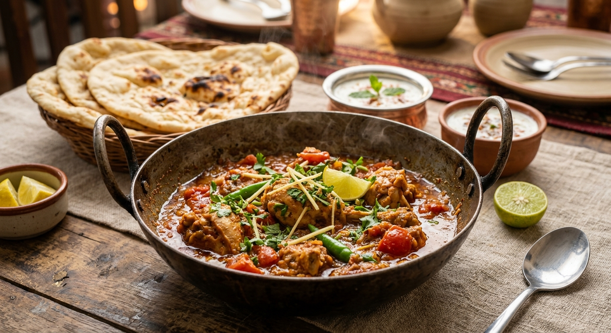

Chicken Karahi
Home

A steaming serving of chicken karahi in a dish also known as karah
Chicken karahi is a chicken dish originating from South Asia. Chicken karahi is
unique from other dishes from the region due to having a tomato base as opposed
to other curries which are typically onion based. Chicken karahi's sharp tomato based
flavor is strengthened by ginger, garlic, and green chilis.
Ingredients
- Ghee
- Garlic cloves
- Ginger
- Green chili peppers
- Boneless chicken
- Tomatoes
- Coriander powder
- Cumin powder
- Red chili powder
- Salt
- Yoghurt
- Garam masala
- Cilantro
Steps
- Heat a pan over high heat and add ghee. Once hot, add garlic, ginder, and green chilli peppers and saute for a minute.
- Add the chicken and salt and saute for 5 minutes. Then add tomatoes, coriander, cumin, red chili pepper, and more salt and saute for a minute.
- Lower the heat and cover the pan and cook the chicken for 20 minutes, occasionally lifting the lid and stirring
- Uncover and raise the heat to high. Cook the chicken for 10 minutes and watch for the ghee to separate
- Lower the heat to medium, add in yoghurt and cook for 2-3 minutes. Add salt, ground black peppercorns, garam masala, and stir. Top with green chili peppers and cilantro and serve.